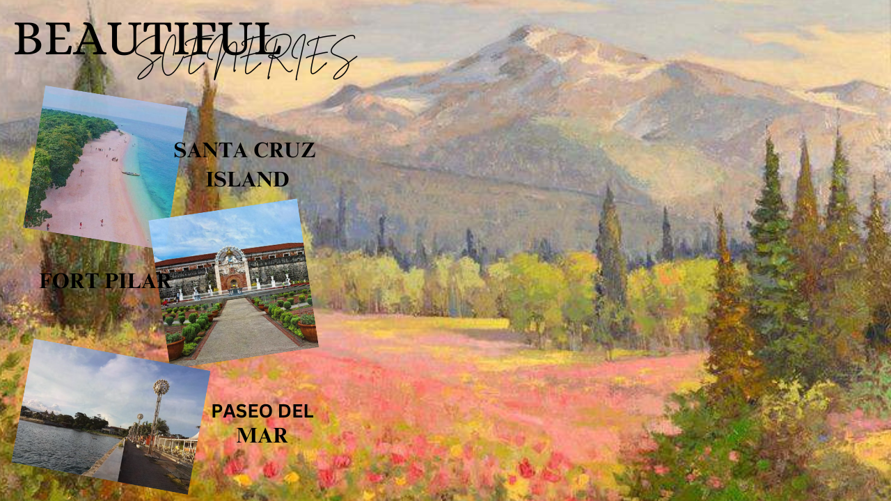

SANTA CRUZ ISLAND is Zamboanga City pride of rare pink sand beach where many tourists adored and often visited in the city.
FORT PILAR is now an outdoor Roman Catholic Marian shrine and a museum. It is the major landmark of Zamboanga City and a symbol of the city's cultural heritage.
PASEO DEL MAR is a bay walk and the evening it is lit up by a beautiful sunset as well and also known for its several restaurants, cafés and entertainment as well.
